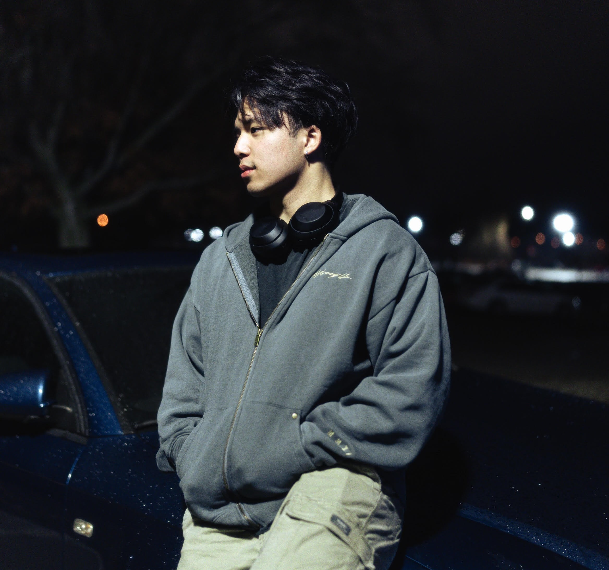

Hello I'm


Hello I'm
“If you only do what you can do, you will never be more than who you are.”
Hi I'm Lucas, a 3+1 MS/BS computer engineering student at Purdue University and an aspiring machine learning engineer. My undergraduate degree has concentrations in software engineering and AI/ML. My graduate degree is following an AI/ML track as well. Additionally I'm also a research assistant at Guo Labs where I'm helping to conduct research on Blurry-Edges, which is a depths from defocus model trained to estimate boundary distances on noisy images. For hobbies I enjoy playing guitar and piano, building lego and gundam sets, and binging 12 episode animes in one day, but my main hobby is powerlifting. I recently went to collegiate nationals and my future goals are to attend junior nationals, maybe worlds, and possibly become a professional on the side.
